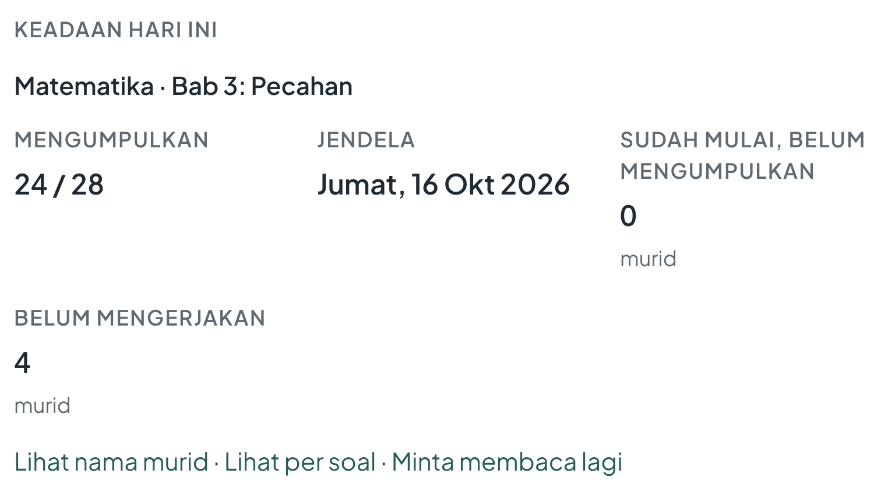
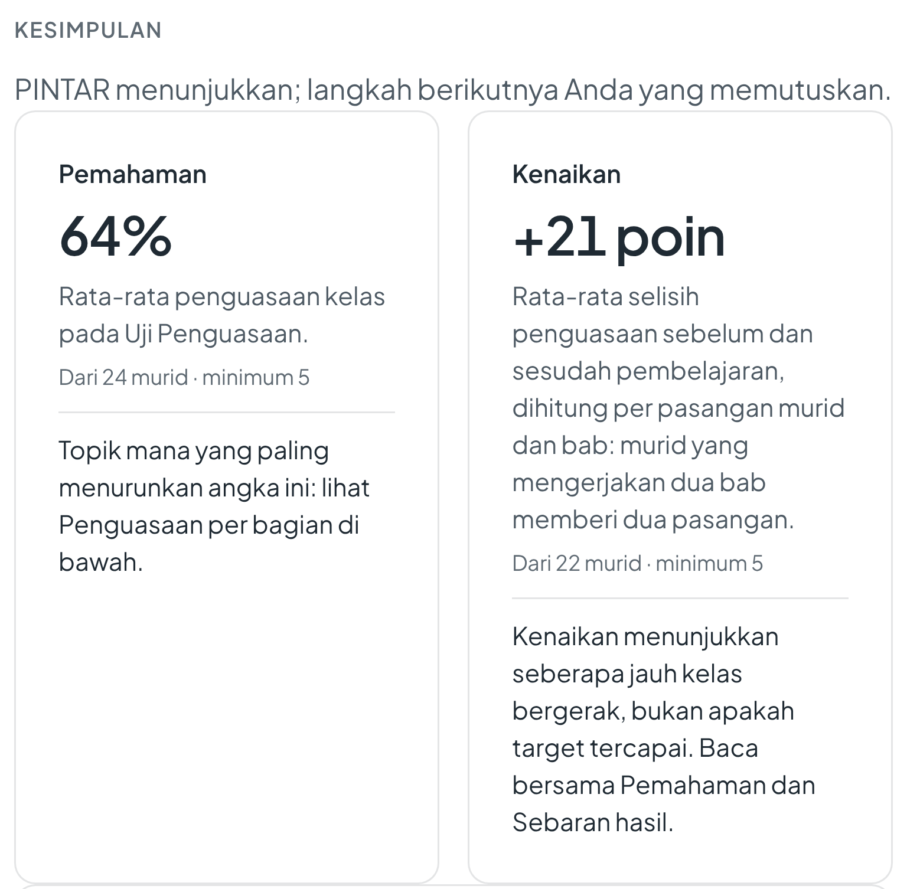
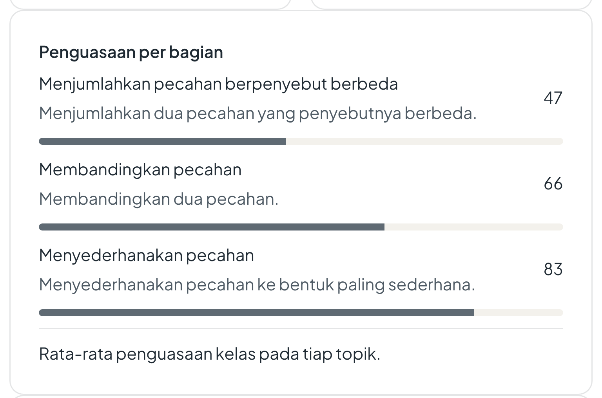
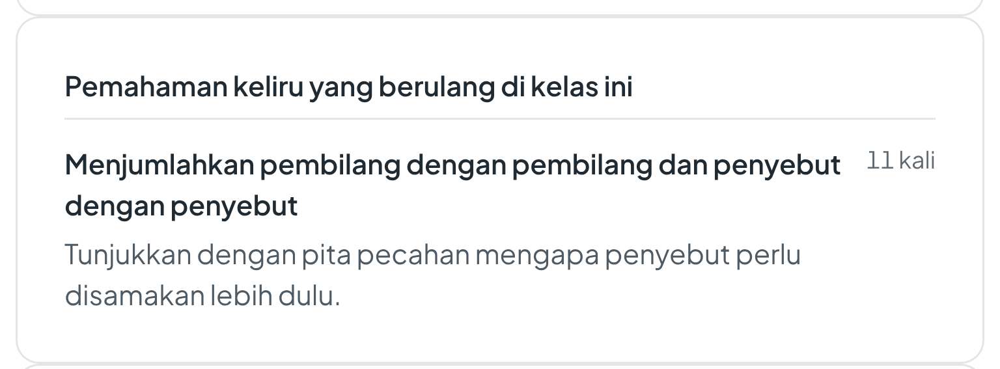
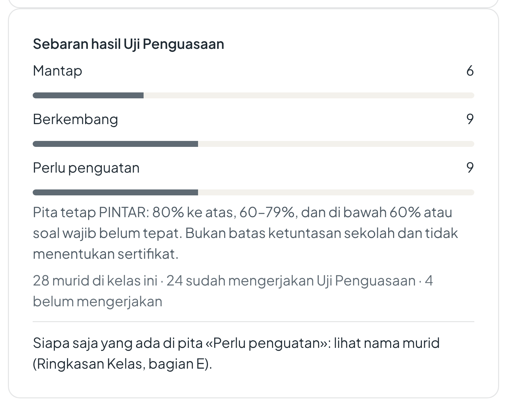
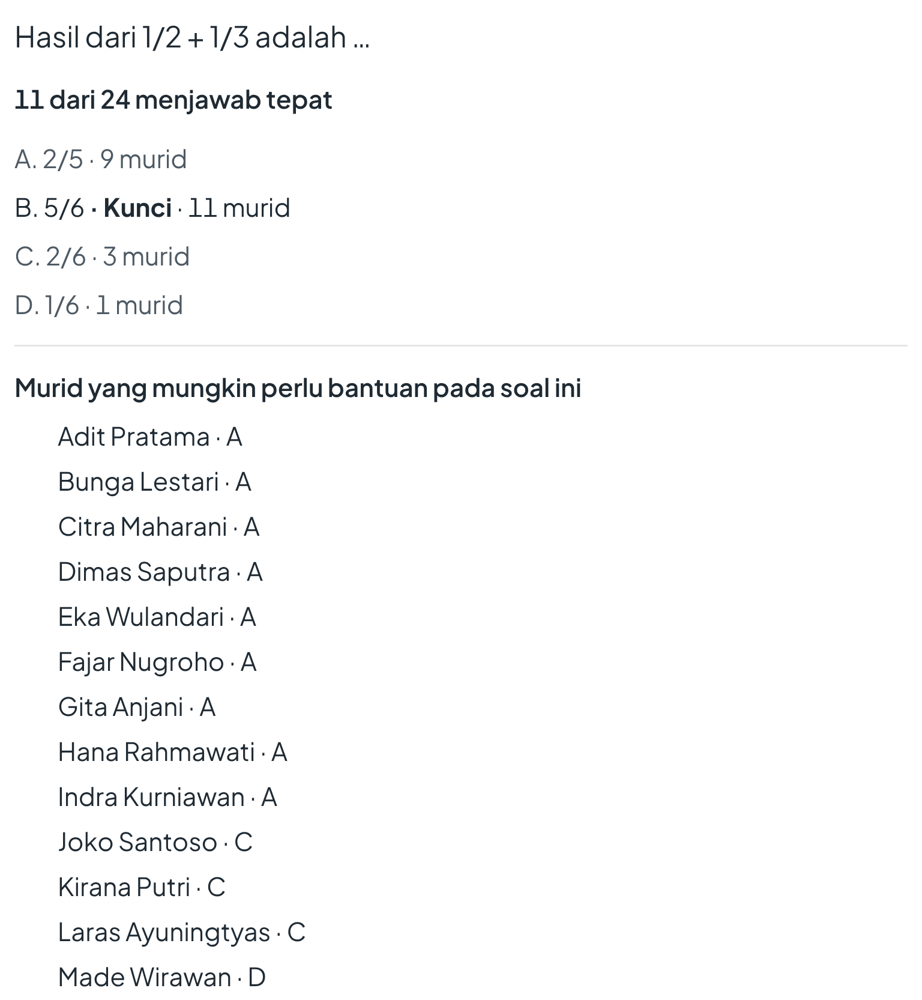
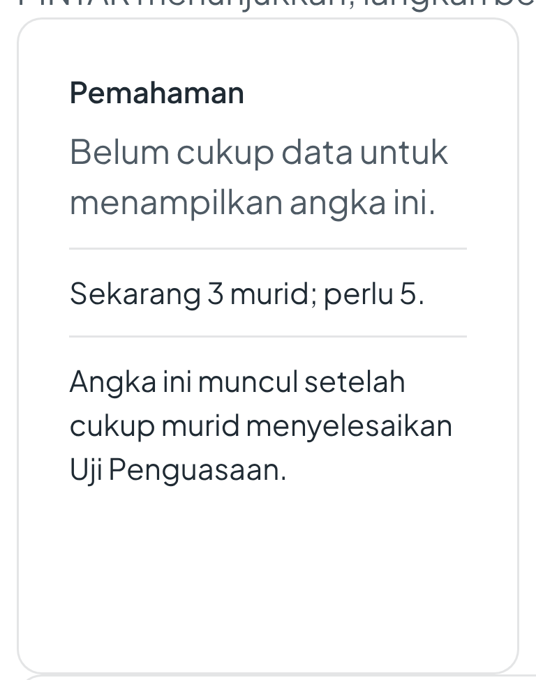

Setelah murid mengumpulkan Uji Penguasaan, PINTAR merangkum apa yang sudah dan belum dikuasai kelas Anda. Anda membaca rangkumannya, lalu memutuskan apa yang diajarkan berikutnya.
Untuk siapa
Guru yang mengajar kelas itu.
Sebelum mulai
Murid sudah mengerjakan Uji Penguasaan (Tugas 10: Uji Cepat atau Uji Penguasaan), dan paling tidak lima murid sudah mengumpulkan.
Fase 1BukaLangkah 1–2
Fase 2BacaLangkah 3–8
Fase 3PutuskanLangkah 9
Sudah pernah? Ini ringkasnya
Tekan Mengajar, pilih kelas, lalu tekan Lihat bukti.
Periksa berapa murid yang sudah mengumpulkan.
Baca «Pemahaman» dan «Kenaikan», lalu bagian yang paling lemah.
Tekan Lihat per soal untuk melihat soal yang paling sulit.
Putuskan: mengajarkan ulang, meminta membaca lagi, Uji Cepat, atau melanjutkan.
Cara membaca halaman ini: tulisan tebal adalah tombol yang Anda tekan. Tulisan di antara tanda «…» adalah teks yang Anda baca di layar. 1 adalah langkah; A menunjuk bagian gambar.
Fase 1
Buka
1
Buka kelas Anda
Tekan Mengajar, lalu pilih kelas yang ingin Anda periksa.
2
Tekan Lihat bukti
Tombol Lihat bukti ada di halaman kelas. Halaman yang terbuka berjudul «Apa yang sudah bisa disimpulkan».
Di PINTAR, bukti berarti jawaban murid yang sudah dikumpulkan.
Istilah
Kata di layar yang dipakai di tugas ini
BuktiJawaban murid yang sudah dikumpulkan.
JendelaBatas waktu pengerjaan asesmen.
PoinSelisih dalam poin persentase. Dari 43% ke 64% berarti +21 poin.
Pemahaman keliruCara berpikir keliru yang sama pada beberapa murid.
Berikutnya: Fase 2, membaca hasil kelas (halaman 2).
Draf · contoh tata letak, belum untuk dibagikan1
Guru
Tugas 12 · Membaca ringkasan hasil belajar seluruh kelas
Fase 2
Baca
3
Periksa dulu siapa yang sudah mengumpulkan
Lihat bagian «Keadaan hari ini». Semua angka di bawahnya hanya berasal dari jawaban yang sudah dikumpulkan.
ABerapa murid yang sudah mengumpulkan, sedang mengerjakan, dan belum mengerjakan.
BUntuk melihat siapa saja yang belum, tekan Lihat nama murid.

Gambar 12.1 «Keadaan hari ini». «Jendela» adalah batas waktu pengerjaan.
4
Baca «Kesimpulan», mulai dari dua angka utama
Setiap angka datang bersama artinya, jumlah murid yang menjadi dasarnya, dan jumlah minimumnya.
C«Pemahaman»: rata-rata penguasaan kelas pada Uji Penguasaan. Di contoh ini dasarnya 24 murid.
D«Kenaikan»: seberapa jauh kelas bergerak sejak Pemetaan Awal, dalam poin. Hanya murid yang mengerjakan keduanya yang dihitung (22 murid).

Gambar 12.2 «Kesimpulan», dua angka utama.
!
Perhatikan: angka belum tampil?
Jika layar menulis «Belum cukup data untuk menampilkan angka ini.», itu bukan hasil buruk. Artinya belum cukup murid yang mengumpulkan. Jangan menyimpulkan dulu, dan lihat (Jika ada kendala, halaman 7).
?
Mengapa begini?
Angka di sini adalah petunjuk, bukan keputusan. Kenaikan menunjukkan seberapa jauh kelas bergerak, bukan apakah target tercapai. Bacalah bersama Pemahaman.
Berikutnya: langkah 5, menemukan bagian yang paling lemah.
2Data contoh: sekolah, kelas, dan nama murid fiktif
Guru
Tugas 12 · Membaca ringkasan hasil belajar seluruh kelas
5
Temukan bagian yang paling lemah
Lihat «Penguasaan per bagian». Setiap baris adalah satu tujuan pembelajaran, dengan angka 0 sampai 100.
EBaris paling atas adalah bagian yang paling lemah. Di contoh ini: menjumlahkan pecahan berpenyebut berbeda, 47.

Gambar 12.3 «Penguasaan per bagian». Yang terlemah ada di atas.
6
Lihat pemahaman keliru yang berulang
Lihat «Pemahaman keliru yang berulang di kelas ini». Pola yang baru terlihat pada sedikit murid tidak dicantumkan.
FPemahaman keliru, berapa kali muncul, dan saran penanganan dari penyusun materi.

Gambar 12.4 «Pemahaman keliru yang berulang di kelas ini».
7
Baca sebaran hasil kelas
Lihat «Sebaran hasil Uji Penguasaan». Bagian ini menghitung murid pada tiga pita tetap.
G«Mantap»: 80% ke atas. «Berkembang»: 60–79%. «Perlu penguatan»: di bawah 60%, atau soal wajib belum tepat.
HJumlah murid di kelas, yang sudah mengerjakan (24), dan yang belum (4).

Gambar 12.5 «Sebaran hasil Uji Penguasaan».
?
Mengapa begini?
Pita adalah pita tetap PINTAR untuk semua sekolah. Pita bukan batas ketuntasan sekolah dan tidak menentukan sertifikat. Nama murid di setiap pita ada di Ringkasan Kelas, bagian E.
Draf · contoh tata letak, belum untuk dibagikan3
Guru
Tugas 12 · Membaca ringkasan hasil belajar seluruh kelas
8
Lihat soal yang paling sulit
Di «Keadaan hari ini», tekan Lihat per soal. Soal yang paling sedikit dijawab tepat ada di paling atas.
IBerapa murid menjawab tepat, dan berapa murid memilih setiap pilihan. «Kunci» menandai jawaban yang benar.
JMurid yang mungkin perlu bantuan, dengan pilihan yang mereka ambil. Pilihan salah yang sama pada banyak murid biasanya menunjukkan satu pemahaman keliru.

Gambar 12.6 «Soal mana yang sulit bagi kelas ini», soal teratas.
!
Perhatikan: murid yang masih mengerjakan tidak terlihat
Halaman ini hanya memakai jawaban yang sudah dikumpulkan. Lihat lagi setelah murid lain mengumpulkan.
Istilah
Kata di layar yang dipakai di halaman ini
KunciJawaban yang benar untuk sebuah soal.
PitaKelompok hasil: «Mantap», «Berkembang», atau «Perlu penguatan».
Tujuan pembelajaranHal yang harus dikuasai murid dalam satu bagian bab.
Berikutnya: Fase 3, memutuskan langkah mengajar berikutnya (halaman 5).
4Data contoh: sekolah, kelas, dan nama murid fiktif
Guru
Tugas 12 · Membaca ringkasan hasil belajar seluruh kelas
Fase 3
Putuskan
9
Putuskan langkah mengajar berikutnya
Keputusan ada pada Anda; PINTAR tidak memutuskan untuk Anda. Pilih satu langkah, atau gabungkan beberapa:
Mengajarkan ulang satu bagian di kelas. Untuk ini tidak ada tombol.
Tekan Minta membaca lagi di «Keadaan hari ini», lalu pilih murid dan pelajarannya. «Hasil murid tidak berubah, dan tidak ada tes baru.»
Tekan Uji Cepat di halaman kelas untuk memeriksa pemahaman lagi (Tugas 10: Uji Cepat atau Uji Penguasaan).
Tekan Siapkan materi di halaman kelas untuk melanjutkan (Tugas 7: Menyediakan materi pembelajaran untuk kelas).
{{D05}}
Gambar 12.7 Dari hasil asesmen ke langkah mengajar berikutnya.
Draf · contoh tata letak, belum untuk dibagikan5
Guru
Tugas 12 · Membaca ringkasan hasil belajar seluruh kelas
Anda selesai jika
Anda tahu berapa murid yang sudah mengumpulkan.
Anda tahu bagian mana yang paling lemah, dan pemahaman keliru apa yang paling sering muncul.
Anda tahu murid mana yang mungkin perlu bantuan.
Anda sudah memilih langkah berikutnya, atau tahu bahwa buktinya belum cukup.
Contoh
Bu Ratna dan Bab 3: Pecahan
Bu Ratna mengajar Matematika di Kelas 7B. Uji Penguasaan Bab 3: Pecahan ditutup hari Jumat. Senin pagi ia menekan Lihat bukti.
24 dari 28murid mengumpulkan
64%Pemahaman, dari 24 murid
+21 poinKenaikan, dari 22 murid
47bagian terlemah
Yang ia lihat
Menjumlahkan pecahan berpenyebut berbeda tertinggal di 47. Membandingkan (66) dan menyederhanakan (83) lebih kuat.
Satu pemahaman keliru muncul 11 kali: pembilang dan penyebut dijumlahkan langsung.
Soal 1/2 + 1/3: hanya 11 dari 24 murid menjawab tepat, dan 9 murid memilih 2/5.
Artinya
Jawaban 2/5 cocok dengan pemahaman keliru yang tercatat.
Masalahnya ada pada satu cara berpikir, bukan pada seluruh bab.
Kelas tetap bergerak maju: +21 poin sejak Pemetaan Awal.
Yang belum dapat disimpulkan
Empat murid belum mengerjakan. Angka ini mewakili 24 murid, bukan 28.
Kenaikan dihitung dari 22 murid saja, yang mengerjakan Pemetaan Awal dan Uji Penguasaan.
Angka tidak menjelaskan mengapa seorang murid memilih 2/5. Untuk itu, Bu Ratna perlu bertanya.
Pita bukan nilai rapor dan bukan batas ketuntasan sekolah.
Yang mungkin ia lakukan
Mengajarkan ulang penjumlahan pecahan dengan pita pecahan, sesuai saran di layar.
Menekan Minta membaca lagi untuk murid yang perlu, dengan pelajaran tentang menyamakan penyebut.
Menekan Lihat nama murid untuk mencari tahu mengapa empat murid belum mengerjakan.
Seminggu kemudian, mengadakan Uji Cepat dengan beberapa soal penjumlahan pecahan.
Bu Ratna boleh memilih langkah lain. PINTAR menunjukkan buktinya; keputusan tetap pada guru.
Berikutnya: Jika ada kendala (halaman 7).
6Data contoh: sekolah, kelas, dan nama murid fiktif
Guru
Tugas 12 · Membaca ringkasan hasil belajar seluruh kelas
!
Jika ada kendala
Situasi yang paling sering terjadi: buktinya belum cukup.
Angka belum tampil
PINTAR tidak menampilkan angka yang dasarnya terlalu kecil. Sebagai gantinya, layar menulis berapa murid yang sudah ada dan berapa yang diperlukan.
K«Belum cukup data untuk menampilkan angka ini.» Ini bukan hasil buruk; artinya belum.
LSeberapa jauh lagi («Sekarang 3 murid; perlu 5.»), dan kapan angka itu muncul.
Tunggu sampai lebih banyak murid mengumpulkan. Untuk melihat siapa yang belum, tekan Lihat nama murid.

Gambar 12.8 «Pemahaman» ketika baru 3 dari 28 murid mengumpulkan.
Yang Anda lihat
Artinya, dan yang dapat Anda lakukan
«Pemahaman» sudah tampil, tetapi «Kenaikan» belum.
Kenaikan hanya menghitung murid yang mengerjakan Pemetaan Awal dan Uji Penguasaan. Periksa apakah murid sudah mengerjakan Pemetaan Awal.
«… tujuan pembelajaran lain baru dikerjakan kurang dari 5 murid, jadi angkanya tidak ditampilkan.»
Bagian itu belum dikerjakan cukup murid. Bagian itu muncul setelah cukup murid mengerjakannya.
Tombol Lihat per soal tidak ada.
Tombol ini muncul setelah sedikitnya satu murid mengumpulkan. Kelas pengembangan profesi tidak memilikinya.
«Belum ada jawaban yang dikumpulkan untuk asesmen ini.»
Belum ada lembar jawaban. Periksa «Keadaan hari ini» (langkah 3, halaman 2).
Pita «Perlu penguatan» berbeda dengan batas ketuntasan sekolah.
Memang berbeda. Untuk ketuntasan seorang murid, lihat hasil resminya (Tugas 11: Melihat hasil belajar seorang murid).
Sinyal mutu soal atau sinyal integritas tidak ada di halaman ini.
Keduanya ditinjau Kepala departemen, bukan guru. Jika Anda menduga kunci sebuah soal keliru, sampaikan kepada peninjau materi (Memperbaiki kunci jawaban yang keliru).
Draf · contoh tata letak, belum untuk dibagikan7
Guru
Tugas 12 · Membaca ringkasan hasil belajar seluruh kelas
Baca juga
Penjelasan lebih lengkap
(Membaca bukti kelas) Bab Guru: semua bagian «Lihat bukti», lebih rinci.
(Memutuskan langkah berikutnya, dan mencatat tindak lanjut) Bab Guru: apa yang terjadi setelah langkah 9.
(Membaca laporan dengan jujur) Bab Pimpinan: apa yang dapat dan tidak dapat disimpulkan dari angka.
(Ringkasan Sekolah dan Ringkasan Kelas) Bab Pimpinan: nama murid di setiap pita.
(Tugas 11: Melihat hasil belajar seorang murid) Hasil resmi satu murid, dan ketuntasannya.
(Tugas 13: Membantu murid yang membutuhkan penguatan) Langkah setelah Anda tahu siapa yang perlu bantuan.
Indeks
Cara orang menemukan Tugas 12
Guru dapat sampai ke tugas ini dari empat arah: kata di layar, perannya, pertanyaannya sendiri, atau masalah yang ia alami. Cuplikan ini diambil dari empat indeks di akhir buku. Entri yang menuju langsung ke tugas ini dicetak tebal.
Indeks AMenurut abjad
KenaikanTugas 12, langkah 4
Lihat buktiTugas 12, langkah 2
Lihat per soalTugas 12, langkah 8
Pemahaman (angka kelas)Tugas 12, langkah 4
Pemahaman keliruTugas 12, langkah 6
Penguasaan per bagianTugas 12, langkah 5
PitaTugas 12, langkah 7
siswalihat Murid
Indeks BMenurut peran: Guru
Tugas 7 · Menyediakan materihalaman …
Tugas 10 · Uji Cepat atau Uji Penguasaanhalaman …
Tugas 11 · Hasil seorang muridhalaman …
Tugas 12 · Ringkasan seluruh kelashalaman 1
Tugas 13 · Membantu muridhalaman …
Indeks C«Saya ingin…»
…tahu bagian mana yang belum dikuasai kelasTugas 12, langkah 5
…tahu soal mana yang paling sulitTugas 12, langkah 8
…tahu siapa yang perlu bantuanTugas 12, langkah 8
…meminta murid membaca ulangTugas 12, langkah 9
Indeks DMengatasi masalah
«Belum cukup data untuk menampilkan angka ini.»halaman 7
«Kenaikan» belum tampilhalaman 7
Tombol Lihat per soal tidak adahalaman 7
«Belum ada jawaban yang dikumpulkan…»halaman 7
Di edisi digital, setiap rujukan dapat diklik. Di edisi cetak, rujukan memakai nomor halaman setelah tata letak buku selesai.
8Draf · contoh tata letak, belum untuk dibagikan
Peninjau
Reviewer notes · not part of the handbook
What changed, and how it was made
Set to the design language v0.1
Page anatomy, in the order the design language gives: role tab, task number and title, a two-sentence lede, the meta row, a three-phase map, «Sudah pernah? Ini ringkasnya», the reading key, phases and steps, boxes, «Istilah», and the footer (page number on the outer edge).
Step beside its picture. Each step sits in the same row as its crop. There are now seven one-idea crops instead of two long ones.
Marks. Steps 1–9 and callouts A–L each run once through the task. Each callout note sits beside its step, so the separate figure legends are gone.
Colour and type. Plus Jakarta Sans only; the monospace and letter-spaced capitals are gone, except the role tab. Orange is used only on callouts. Amber is used only for «Perhatikan» and «Jika ada kendala», and grey-blue only for «Mengapa begini?». Nothing is set below 8 pt.
Wording. One term per thing: «pemahaman keliru» throughout (the earlier "kesalahan pikir" is gone). Cross-references use titles, never bare numbers. Bold marks only what is pressed.
D-05 is redrawn to the same rules and printed full-width, so its text is about 9 pt. Its text equivalent sits in the SVG for screen readers.
The screenshots
Real screens, fictional data. The product's own components, stylesheet and screen text from main (1b1cada8) are rendered with a fictional class: SMP Peragaan Nusantara, Kelas 7B. The local database stack cannot start in this environment, so nothing was clicked through.
Captured at 576 px. That is just above the product's 560 px phone breakpoint, so «Keadaan hari ini» and the two «Kesimpulan» cards keep their side-by-side layout.
One scale for all crops. All crops print at one scale: 512 px = 94 mm. Body text prints at about 8 pt and the small labels at about 6–6.5 pt, close to the mockup. If teacher testing finds that too small, the design language's own fallback applies: larger figures, and the task runs a page longer.
Callout boxes come from the elements' own positions plus a margin, so outlines never cut text. Each letter badge sits outside its box, at the top-left corner.
Two departures from the mockup, for accuracy
The reading key. It says «tanda «…»» rather than «kurung siku», because «…» are guillemets, not square brackets.
The «Poin» gloss. It reads «Selisih dalam poin persentase», because Kenaikan is an average difference, not a single before-and-after figure.
Before a page ships (design language §7)
The phase map and step titles alone tell the route. Each step shares a row with its picture, except steps 1, 2 and 9.
Steps and letters each run once. Colour always has a word, letter or sign beside it, and there is no red or green on results. Every screen word was checked against src/lib/hle.ts.
Two checks are still open: a black-and-white photocopy test, and «Has one teacher done the task from the page without help?».